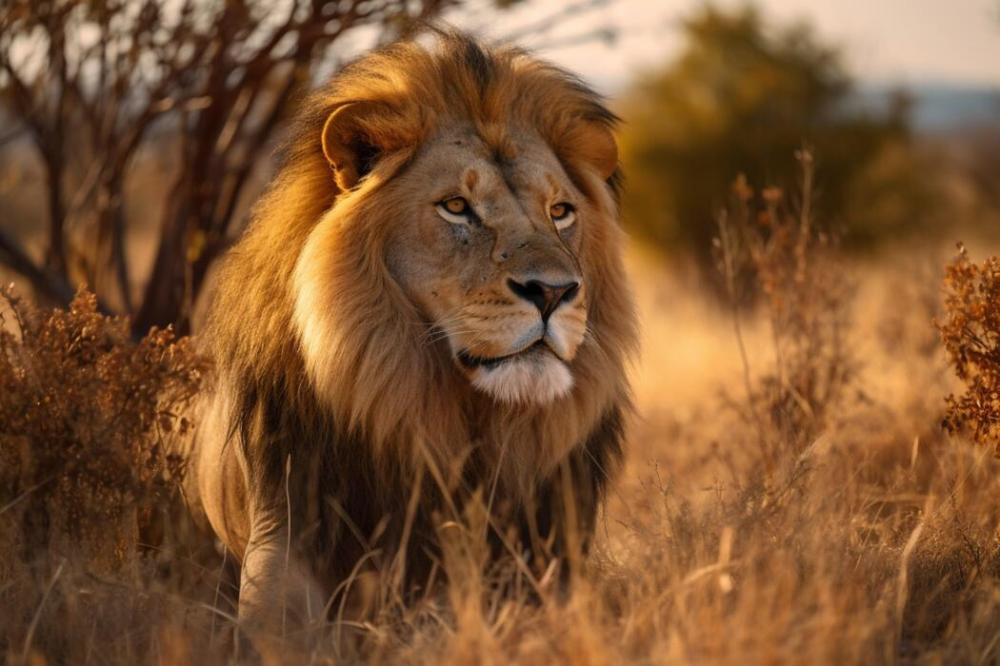
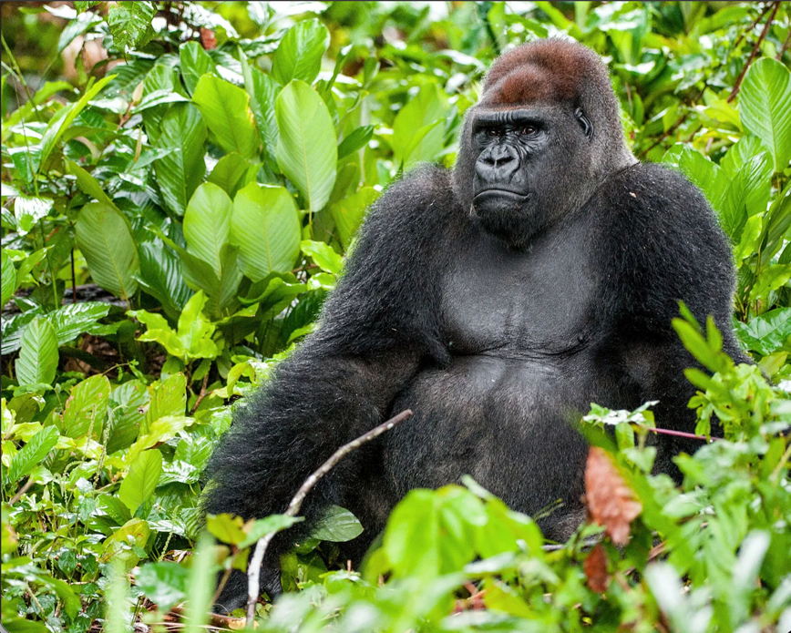
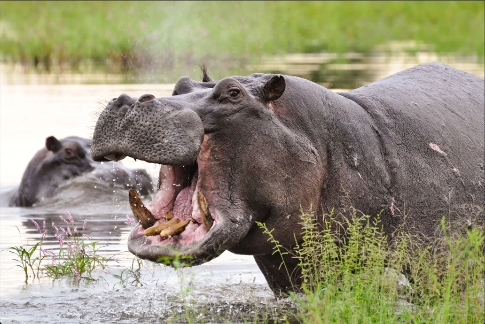

Lions are apex predators in their natural habitat, known for their strength and agility.
This is why they are called as "The Kings of the jungle".

Polar bears are marine mammals adapted to life on Arctic sea ice.
They have white or yellowish fur, black skin, and thick fat layers for insulation.

Gorillas are the largest living primates, closely related to humans with 96–99% genetic similarity.
They inhabit tropical and subtropical forests across Central Africa and live in social groups led by a dominant silverback male.

Koalas (Phascolarctos cinereus) are arboreal herbivorous marsupials native to Australia.
They inhabit eucalyptus forests across Queensland, New South Wales, Victoria, and South Australia.

The hippopotamus (Hippopotamus amphibius) is a large, semiaquatic mammal native to sub-Saharan Africa, living in rivers, lakes, and swamps.
They are found throughout sub-Saharan Africa, inhabiting rivers, lakes, and mangrove swamps where they can stay submerged during the day to keep cool and avoid sunburn.

Red Pandas are small, reddish-brown, raccoon-like mammals with bushy ringed tails, native to the eastern Himalayas and southwestern China.
Red pandas are roughly the size of a large domestic cat, with a head-to-body length of 50–65 cm and a tail length of 30–50 cm, weighing between 3 and 6.2 kg (6.5–14 pounds).